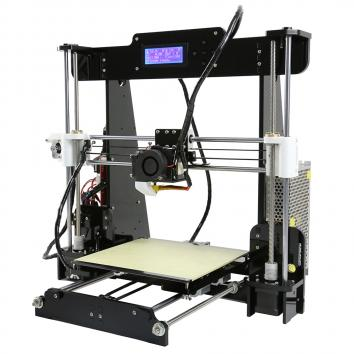
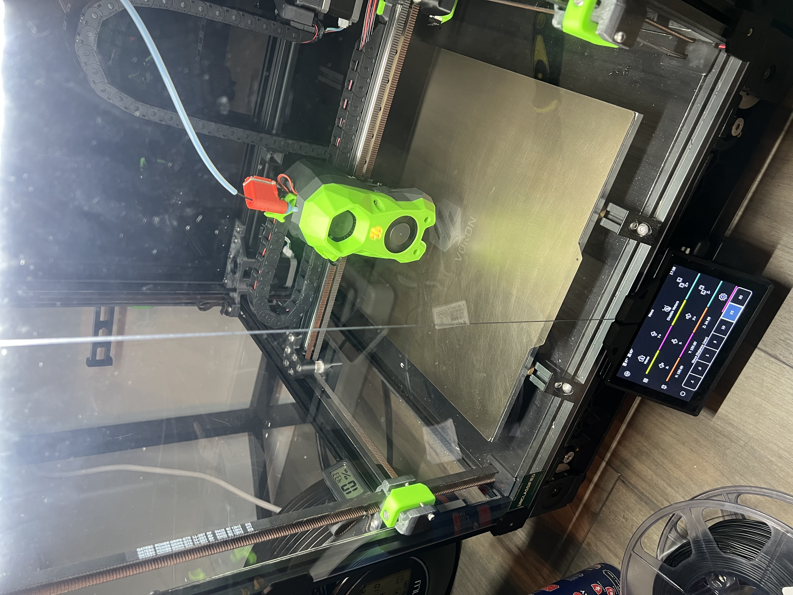

Add photo: images/printers/Anet-A8-3D-Printer.jpg

[Anet A8]
[2017] · [Bed-Slinger]
This was the first 3D printer I ever owned, my family said I needed a printer for college so for my 18th birthday (pretty much the start of senior year of highschool) they bought me a Brother Compact Laser Printer I was excited but I
quietly asked my mom if I could return it in exhange for a 3D printer instead which became much more relavent in college than the laser printer. The Anet A8 was an incredible(-ly dangerous) machine that seeded my interest in 3D printing. I first printed upgrades to
the machine which improved the print quality and the safety then I started printing trinkets and replacement parts for stuff around the house. The machine probably ran once a day for the 10 months before college and the freedom it provided shaped who I've become.
My college dorm didn't have the space for a printer so I left it at home and quickly became a regular at the Penn State 3D Printer Club, repairing, modifying, and heavily using their machines for a measly $10 a semester. I'd later give back by holding different officer positions before becoming President of the club my senior year.
UpgradesMaterials
Add photo: images/printers/Creality Ender 3.jpg

Creality Ender 3
[2018] · [Bed-Slinger]
A staple in any 3D printer collection, the professor of my course on Design for Additive Manufacturing didn't require a text book and instead requested we buy a 3D printer instead. Easily upgradable and was cheaper than most of the required textbooks for my other courses.
Add photo: images/printers/Eryone Thinker SE.jpg

Eryone Thinker SE
[2020] · [Bed-Slinger]
Got the printer based on a recommendation of a friend and ended up working with the company who gave me a discount on this printer, filament, and eventually my next Eryone printer as well. They had a close knit facebook group where we often messaged with the lead
engineer of the machine to discuss bugs we found and upgrades we adapted. We upgraded the machine with automatic bed leveling, a BTT mainboard, and a fully custom built extruder.
Add photo: images/printers/Eryone ER20.jpg

Eryone ER20
[2021] · [Bed-Slinger]
I worked closely with the company during the design phase and the ER-20 became a very reliable machine. Great little printer but would go on to canibalize the frame to experiment with unique extruder designs.
Add photo: images/printers/Longer Orange Printers.jpg.png

Longer Orange 10 and 30
[2021] · [Resin - LCD]
These were some of the cheapest resin 3D printers on the market and, due to the simplicity of the technology, they were my most reliable machines at the time. Super cool to experiment with resin 3D printing at home since Formlabs was the major player on the market and it's price limited the technology to densits and industral companies
for a long time. With the crazy detail that was achievable on resin machines, I took up an interest in 3D Printed jewelry and designed pieces for friends and family. I posted a couple of the designs on etsy and someone in the world has a necklace designed and printed by me.
Add photo: images/printers/FlashForge Creator Pro.jpg

FlashForge Creator Pro
[2021] · [Cartesian]
This printer was incredible. Not incredible in quality, infact it was probably average at best in terms of quality but the printer just worked. It was the closest to a tool 3D Printers had gotten at the time, AND it was capable of using two materials! "Ye Ol' Reliable" as my friends and I would call it.
Add photo: images/printers/Makerbot Replicator 2.jpg

Makerbot Replicator 2
[2021] · [Cartesian]
Wow this printer sucked. I bought it from someone on facebook marketplace partially because it was cheap, partially hoping it would be comprable to the flashforge, and partially because it was the same printers we had in my highschool that my professor wouldn't let us use.
Little did I know he was actually saving us. This printer wanted to be the flashforge but fell short at every subassembly.
Add photo: images/printers/Formlabs Form 2.jpg

Formlabs Form 2
[2021] · [Resin - SLA ]
I got the printer for free off facebook marketplace because someone said it was caked in resin and un-usable. One bottle of IPA later and I had myself a fully functional Formlabs Form 1 with the cure chamber and a ton of material. Probably one of my top 3 printers not
for it's ease of use or material capabilites but because it was the first time I had seen SLA in person and it was hypnotizing! Printed a ton of little sasquaches and hid them in the live plant walls at the office I was interning at. Only had for a summer but super cool machine.
Add photo: images/printers/AnyCubic Mono X.jpg

AnyCubic Mono X
[2021] · [Resin - LCD]
Got this machine after selling the Formlabs machine and was very pleased with this machine. I still have it and while I dont use it nearly as frequently as I once had, it's still a great machine. The buildvolume was one of the largest available in consumer resin printers
and I printed multiple models which utilized the full volume. The model seen here is "Old Barney Lighthouse" from Barnegat Light, New Jersey where my family vacations to regularly. I reverse engineered the lighthouse by utilizing publicly available drawings online and photogrammetry captured by myself and local drone photographers.
This was a great printer and will continue to be one and I see myself holding onto it for atleast another 5 years.
Add photo: images/printers/Creality Ender 6.jpg

Creality Ender 6
[2023] · [CoreXY]
I got this machine and all of my subsequent creality machines from someone on facebook marketplace who saved them from the trash after a company went out of business. This was my first CoreXY printer and probably my favorite of all the creality machines; I got it right when Voron 3D printers started to gain popularity.
I wired the machine with a raspberry pi, flashed the mainboard with Klipper, insullated to better print ASA and ABS, upgraded the extruder to direct drive, and swapped the stock hotend with an E3D Revo. After becoming a regular at my local MicroCenter store, I made a friend who convinced me the next logical step
of my 3D printing career would be to print the Voron parts and buy a kit so I started offloading my old printers and saving up.
Creality CR10 Mini
[2023] · [Bed-Slinger]
Fixed and flipped to help fuel the voron dream. Kinda a garbage printer, pretty much the same as the ender 3.
Add photo: images/printers/Creality CP-01.jpg

Creality CP-01
[2023] · [CoreXY]
Flipped to help fuel the voron dream. A super low quality knock off of the snapmaker 3-in-1 3D printer. Tried setting up the laser cutter and the mill but the software for running these heads was so broken I never managed to functionally test them.
Add photo: images/printers/Creality LD-002H.png

Creality LD-002H
[2023] · [Resin - LCD]
Had two and flipped one to help fuel the voron dream, kept the other and still use it. Forgot how much I missed having a smaller resin printer because they didn't require liters of resin to fill the vat making them also easier to change materials.
My LD-002H is still a workhorse 3D printer in my current fleet and, similar to the Mono X, don't anticipate getting rid of it unless there's some crazy innovation in resin 3D printers.
Add photo: images/printers/Formbot TRex.jpg

Formbot TRex 2 Plus
[2023] · [Bed-Slinger]
Built my Voron 2.4 and loved the process so much I picked this one up off facebook marketplace and after some minor maintenance the machine was fully functional again. I didn't plan on stopping there, however; I swapped the mainboard for a BTT Octopus
and upgraded the extruders to Phaetus hotends. The project came to an unfortunate hault after I fried the mainboard of my Voron 2.4 adding accessories and chasing the fastest benchy print I could. I scrapped the machine to fix the 2.4 but I still have
the original motion system and hope to rebuild it with the goal of printing parts for my car like bumpers, skirts, and even a full spoiler.
Add photo: images/printers/Bambu A1 Combo.jpg

Bambu A1 Combo
[2024] · [Bed-Slinger]
I fought the urge to buy a bambu prnter as long as I could but when a freelance client came to me with a need for multicolor 3D printing, I willingly caved. It's been a great printer. I'm not a fan of their practice of taking open source 3D
printing technology and releasing a product that's so locked down it rivals Stratasys but in the consumer market. It's no debate their machines have completely disrupted the consumer 3D printing industry and their innovation has spured creativity in
3D printing enthusiests and now general makers alike. They've accomplished the goal of making 3D printers as user friendly as a desktop inkjet/laser printer. I've put over 1000 hours on my machine and anticipate upgrading to another bambu printer down the line.
Add photo: images/printers/custom-voron.jpg

Voron 2.4 300mm
[2024] · CoreXY
The Voron 2.4 is a fully enclosed, high-performance CoreXY 3D printer designed around precision, speed, and complete customization. Unlike most off-the-shelf printers, the Voron is built almost entirely from the ground up, combining mechanical engineering, electronics, and software into one highly integrated machine.
I started with a partial kit, which I supplemented with my own mainboard, toolhead board, and extruder. Building one involves assembling a complex motion system, aligning linear rails, squaring the frame, wiring electronics, configuring sensors, and tuning every component to work together with incredible precision.
On the software side, I learned a lot more about working with Klipper firmware, configuring hardware through code, and fine-tuning motion parameters to achieve reliable, high-speed printing.
It was a really engaging project that demanded patience, problem-solving, and attention to detail. Fortunately (or unfortunately, depending on your perspective), having built it myself means I'm constantly looking for new ways to improve its speed and print quality.
Keeping up with the latest technology and adapting the machine along the way has turned it into a never-ending project, and honestly, that's half the fun.
CoreXYFirmwareElectronics
Add photo: images/printers/custom-micron.jpg

Voron Micron 180mm
[2026] · CoreXY
The Voron Micron is a compact CoreXY 3D printer that packs a surprising amount of engineering into a relatively small footprint. Like my Voron 2.4, I started with a partial kit and supplemented it with my own hardware, but this build gave me the opportunity to dive much deeper into the electronics, firmware, and overall machine configuration.
One of the biggest differences was switching to CAN bus for the toolhead. This simplifies the wiring considerably, reducing the number of individual connections running to the toolhead, but adds another layer of complexity when it comes to installation, configuration, and troubleshooting.
I also spent considerably more time working directly with Klipper, writing and modifying configuration files, and experimenting with different probing systems to find what worked best.
One particularly memorable troubleshooting experience came when I couldn't get my probe working correctly. Rather than continuing to guess, I went pin by pin with a multimeter to map out the connections myself. As it turned out, the pinout diagram included with the hardware was for the EBB36 V1.1 rather than the V1.2.
Although the boards are nearly identical, some of the header pin assignments had changed between revisions without any physical changes to the hardware. A small documentation detail that turned into a pretty involved troubleshooting exercise.
CoreXYFirmwareElectronicsCustom extruder